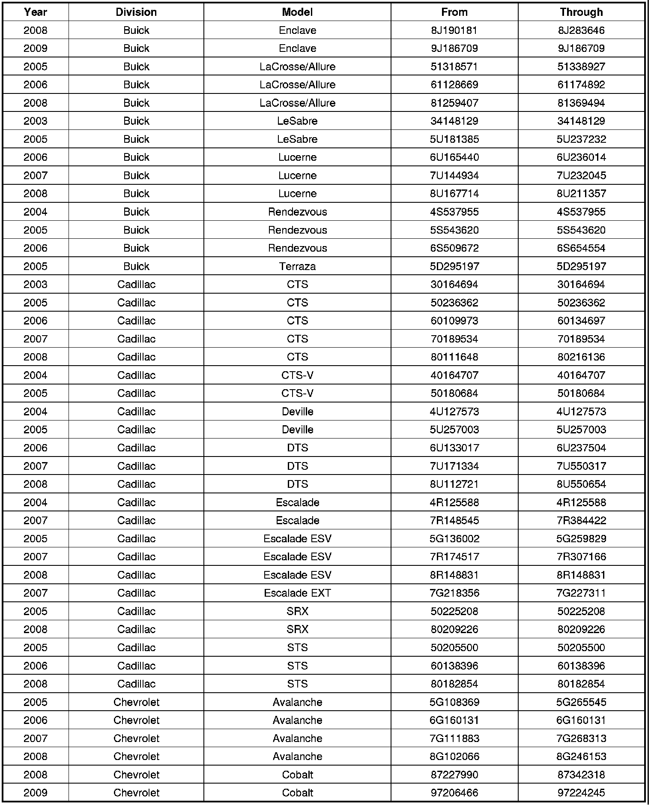
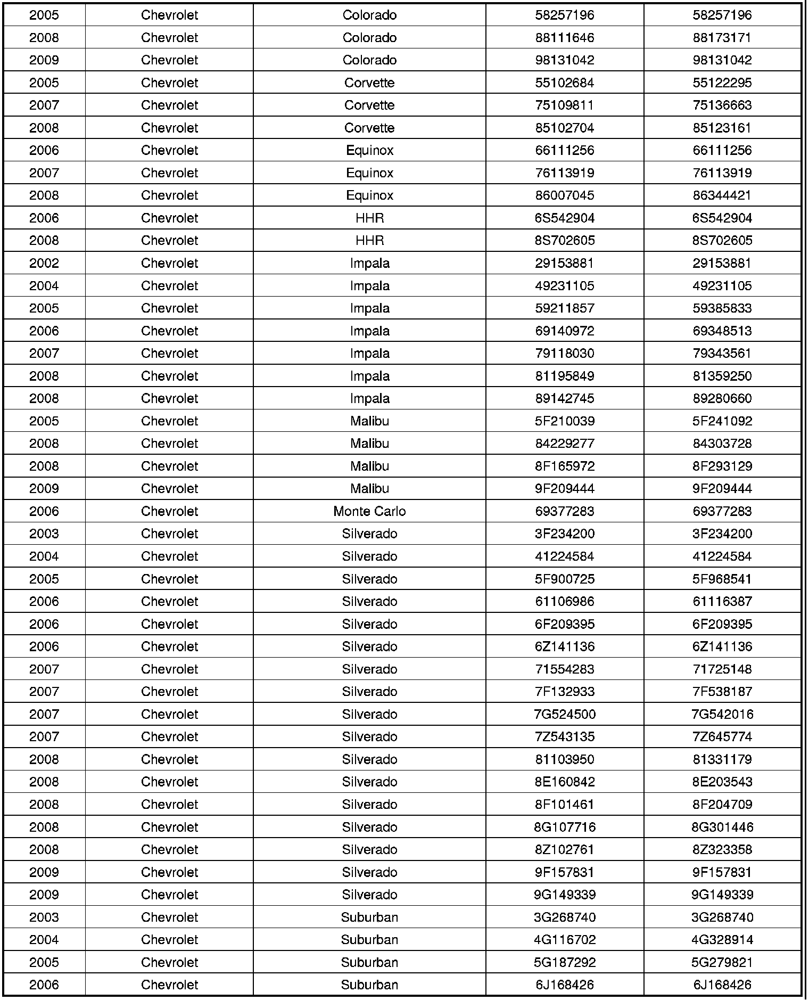
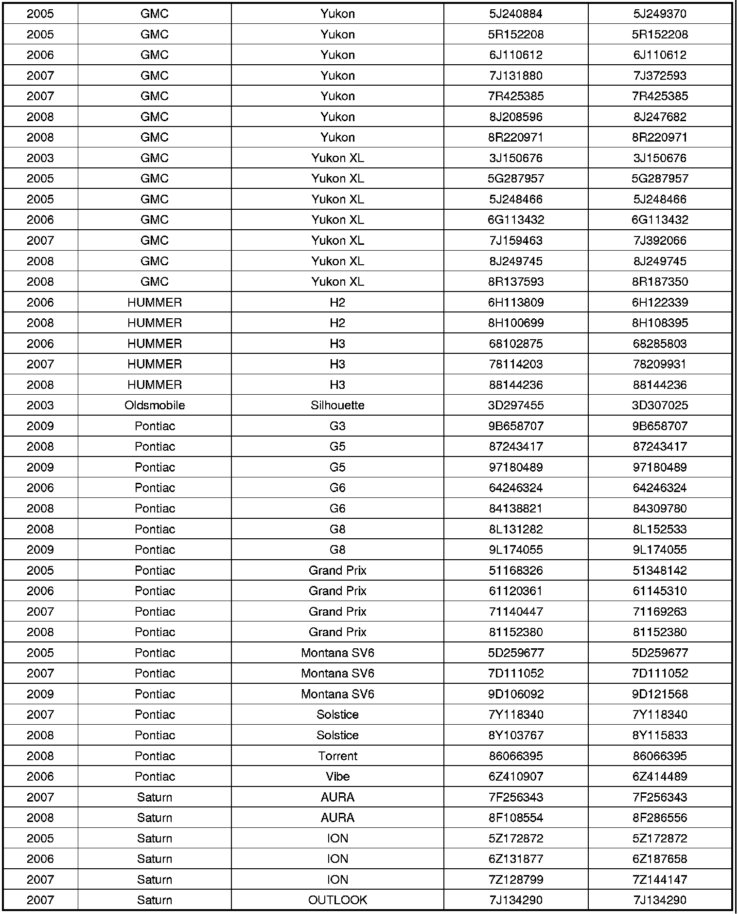
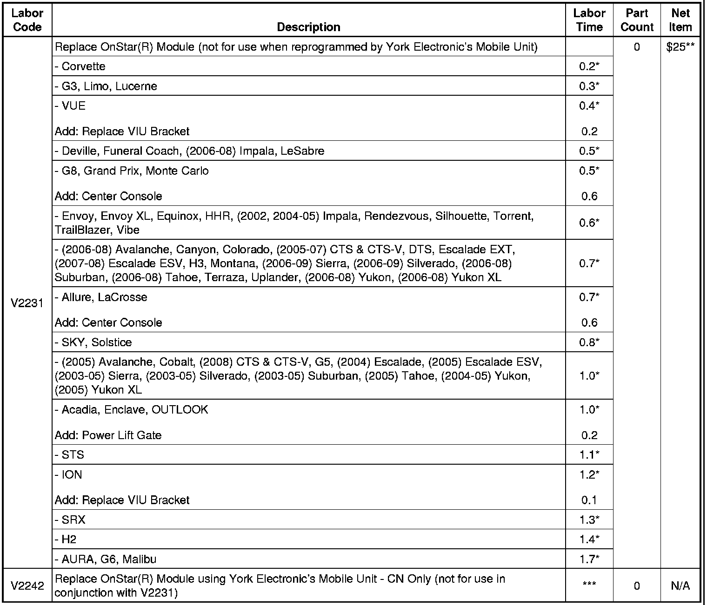

Campaign - Unwanted Repeat Calls To OnStar(R)
CUSTOMER SATISFACTIONBulletin No.: 10037B
Date: May 13, 2011
Subject: 10037A - Unwanted Repeat Calls to OnStar(R)
Models:
2003 Buick LeSabre
2004-2006 Buick Rendezvous
2005 Buick LeSabre, Terraza
2005-2006 Buick LaCrosse/Allure
2006-2008 Buick Lucerne
2008 Buick LaCrosse/Allure
2008-2009 Buick Enclave
2003 Cadillac CTS
2004 Cadillac Escalade
2004-2005 Cadillac CTS-V, Deville
2005 Cadillac Escalade ESV, SRX
2005-2006 Cadillac STS
2005-2008 Cadillac CTS
2006-2008 Cadillac DTS
2007 Cadillac Escalade, Escalade EXT
2007-2008 Cadillac Escalade ESV
2008 Cadillac SRX, STS
2002 Chevrolet Impala
2003-2008 Chevrolet Suburban
2003-2009 Chevrolet Silverado
2004-2008 Chevrolet Impala
2005 Chevrolet Colorado, Corvette, Malibu
2005-2006 Chevrolet Uplander
2005-2008 Chevrolet Avalanche, Tahoe, TrailBlazer
2006 Chevrolet HHR, Monte Carlo
2006-2008 Chevrolet Equinox
2007-2008 Chevrolet Corvette
2008 Chevrolet HHR
2008-2009 Chevrolet Cobalt, Colorado, Malibu, Uplander
2003 GMC Envoy XL, Sierra, Yukon XL
2004-2008 GMC Yukon
2005-2009 GMC Sierra
2005-2008 GMC Yukon XL
2006-2008 GMC Envoy
2007 GMC Canyon
2007-2009 GMC Acadia
2006 HUMMER H2
2006-2008 HUMMER H3
2008 HUMMER H2
2003 Oldsmobile Silhouette
2005 Montana SV6
2005-2008 Pontiac Grand Prix
2006 Pontiac G6, Vibe
2007 Pontiac Montana SV6
2007-2008 Pontiac Solstice
2008 Pontiac G6, Torrent
2008-2009 Pontiac G5, G8
2009 Pontiac G3, Montana SV6
2005-2007 Saturn ION
2006-2009Saturn VUE
2007-2008 Saturn AURA, OUTLOOK, SKY
Equipped with OnStar(R) (RPO UE1)
Supercede:
This Parts Information section in this bulletin has been revised for Canadian dealers only. OnStar(R) modules are to be obtained by contacting York Electronics. Please discard all copies of bulletin 10037A, issued April 2011.
THIS PROGRAM IS IN EFFECT UNTIL APRIL 30, 2012.
Condition
Certain 2002-2009 model year vehicles equipped with OnStar(R) may have a condition in which the vehicle's OnStar(R) system repeatedly makes incomplete calls to OnStar(R) without the vehicle's occupant(s) input or knowledge. Customer initiated Blue Button call, Emergency calls, and Automatic Crash Notification calls will also fail to establish a data connection with the OnStar(R) Call Center. Eventually, the customer's call will connect as a voice only line and the customer will be able to talk with an OnStar(R) advisor; however, the advisor will not get crucial customer data such as vehicle identification and location.
Correction
Dealers are to replace the OnStar(R) module (VCIM).
Vehicles Involved
Involved are certain 2002-2009 model year vehicles equipped with OnStar(R), and built within these VIN breakpoints:
Note:
Some model years/models have only one vehicle involved.





Important
Dealers are to confirm vehicle eligibility prior to beginning repairs by using the Investigate Vehicle History link. Not all vehicles within the above breakpoints may be involved.
For dealers with involved vehicles, a listing with involved vehicles containing the complete vehicle identification number, customer name, and address information has been prepared and will be provided to dealers/retailers through the GM GlobalConnect Recall Reports. Dealers will not have a report available if they have no involved vehicles currently assigned.
The listing may contain customer names and addresses obtained from Motor Vehicle Registration Records. The use of such motor vehicle registration data for any purpose other than follow-up necessary to complete this program is a violation of law in several states/provinces/countries. Accordingly, you are urged to limit the use of this report to the follow-up necessary to complete this program.
Parts Information
US: OnStar(R) modules required for this program are to be obtained by contacting Autocraft Electronics via the web at www.autocraft.com, and selecting the catalog item that contains bulletin number 10037 (or PIC 4893B), or by calling 1-800-336-3998. Dealer must provide the VIN, R.O. number, and the current vehicle mileage.
Canada: OnStar(R) modules required for this program are to be obtained by contacting York Electronics at 1-800-361-2894 (Calgary location) or 1-888-650-9675 (Oshawa location). Dealer must provide the VIN, R.O. number, and the current vehicle mileage.
DO NOT ORDER ONSTAR(R) MODULES FROM GENERAL MOTORS CUSTOMER CARE AND AFTERSALES (GMCC&A) OR THE TECHNICAL ASSISTANCE CENTER (TAC).
Service Procedure
Note
Do NOT replace the inside rear view mirror in tandem with this concern. The mirror has no bearing on this specific issue.
1. Remove the OnStar(R) module (referred to as the Communication Interface Module (CIM) or Vehicle Communication Interface Module (VCIM) in SI). Refer to SI for module removal instructions.
Note
Inform customer that all Bluetooth devices must be paired with the new VCIM. Bluetooth devices that have not been paired to the new VCIM will not function properly.
2. Install the new OnStar(R) module (referred to as the Communication Interface Module (CIM) or Vehicle Communication Interface Module (VCIM) in SI). Refer to SI for module installation instructions.
Courtesy Transportation
The General Motors Courtesy Transportation program is intended to minimize customer inconvenience when a vehicle requires a repair that is covered by the New Vehicle Limited Warranties. The availability of courtesy transportation to customers whose vehicles are within the warranty coverage period and involved in a product program is very important in maintaining customer satisfaction. Dealers are to ensure that these customers understand that shuttle service or some other form of courtesy transportation is available and will be provided at no charge. Dealers should refer to the General Motors Service Policies and Procedures Manual for Courtesy Transportation guidelines.
Warranty Transaction Information
Submit a claim using the table below.

Submit 0.2 hours administrative allowance under "Administration Time" for the module exchange.
** The $25 represents the additional net amount allowed for the module exchange.
*** Dealers are to claim only administrative allowance of 0.2 hours when the module is replaced by York Electronic's Mobile Unit. Dealer should submit the 0.2 hours administrative allowance under Administrative Time.
Customer Notification
OnStar will notify customers of this program on their vehicle.
Dealer Program Responsibility
All unsold new vehicles in dealers' possession and subject to this program must be held and inspected/repaired per the service procedure of this program bulletin before customers take possession of these vehicles.
Dealers are to service all vehicles subject to this program at no charge to customers, regardless of mileage, age of vehicle, or ownership, through April 30, 2012.
Customers who have recently purchased vehicles sold from your vehicle inventory, and for which there is no customer information indicated on the dealer listing, are to be contacted by the dealer. Arrangements are to be made to make the required correction according to the instructions contained in this bulletin.
In summary, whenever a vehicle subject to this program enters your vehicle inventory, or is in your dealership for service through April 30, 2012, you must take the steps necessary to be sure the program correction has been made before selling or releasing the vehicle.

Disclaimer